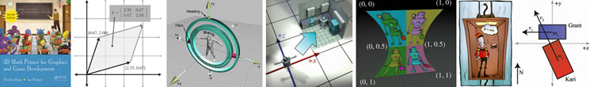
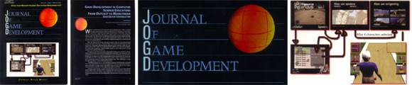
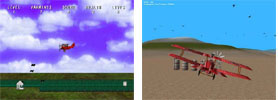
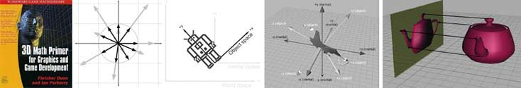
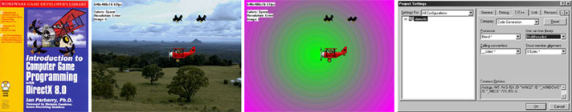
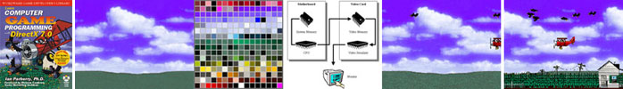

Game Programming Education
The following publications describe my work on game programming education.
The first one was published in 1995, but the big breakthrough was my SIGCSE
paper in 2005. In the decade in between I found it impossible to get game
programming papers accepted anywhere, and so I wrote a series of books instead.
Introduction to Game Physics with Box2D (2013)
Ian Parberry,
Introduction to Game Physics with Box2D,
AK Peters Publishers,
2013,
[More Information]
From the Preface
The physicist Richard Feynman once said
"Study hard what interests you the most
in the most undisciplined, irreverent
and original manner possible."
Introduction to Game Physics With Box2D
is a book that is very much
in the spirit of his advice:
an undisciplined, irreverent, and original book on how to program the physics used in 2D video games.
After a little math background and fiddling
around with hand-written code for simple rigid body
and soft body dynamics,
it shows how to make your 2D physics programming problems more manageable
by using the Box2D physics engine.
I expect you, the reader, to be able to stomach a little math and
to be a competent C++ programmer, both approximately at the level
that a casual observer might reasonably expect
of a non-knuckle-scuffing sophomore or junior in a
computer science program at a
middling-to-competent state university.
Introduction to Game Physics With Box2D
contains five different kinds of material:
coding with Box2D (47%),
coding without Box2D (24%),
mathematics (16%),
algorithms (5%),
and miscellaneous stuff (8%).
The supplementary material below
includes executables and source code for two minigames and two toys,
YouTube videos,
and PowerPoint lecture notes.
The source code is
written in C++ for Windows using Visual Studio 10 and DirectX 9.
3D Math Primer Reloaded (2011)

Fletcher Dunn and
Ian Parberry,
3D Math Primer for Graphics and Game Development,
Second Edition, A. K. Peters, 2011.
[more information]
From the Introduction
This book is about 3D math, the geometry and algebra of 3D space. It
is designed to teach you how to describe objects and their positions, orientations,
and trajectories in 3D using mathematics. This is not a book
about computer graphics, simulation, or even computational geometry, although
if you plan on studying those subjects, you will definitely need the
information here.
This is not just a book for video game programmers. We do assume
that a majority of our readers are learning for the purpose of programming
video games, but we expect a wider audience and we have designed the
book with a diverse audience in mind. If you're a programmer or interested
in learning how to make video games, welcome aboard! If you meet neither
of these criteria, there's still plenty for you here. We have made every effort
to make the book useful to designers and technical artists. Although there
are several code snippets in the book, they are (hopefully) easy to read even
for nonprogrammers. Most important, even though it is always necessary
to understand the surrounding concepts to make sense of the code, the
reverse is never true. We use code samples to illustrate how ideas can be
implemented on a computer, not to explain the ideas themselves.
The title of this book says it is for "game development," but a great
deal of the material that we cover is applicable outside of video games.
Practically anyone who wants to simulate, render, or understand a three-dimensional
world will find this book useful. While we do try to provide
motivating examples from the world of video game development, since that
is our area of expertise and also our primary target audience, you won't be
left out if the last game you completed was Space Quest.
(Well, you may be left out of a few jokes, like that one. Sorry.) If your interests
lie in more "grown up" things than video games, rest assured that this book
is not filled with specific examples from video games about head-shots or
severed limbs or how to get the blood spurt to look just right.
Challenges and Opportunities (2011)
Ian Parberry,
"Challenges and Opportunities in the Design of Game Programming
Classes for a Traditional Computer Science Curriculum",
Journal of Game Design and Development Education, Vol. 1, pp. 1-17, 2011.
[html,
pdf]
Abstract
Game programming classes have been offered at the University of North Texas continuously since
1993. The classes are project based, and feature collaborative coursework with art majors in UNT's
College of Visual Arts and Design. We discuss the design that enables them to provide training for
students intending employment in the game industry without sacrificing academic educational depth or
the educational needs of mainstream computer science students.
Author's Comments
This paper is an revised journal version of the 2005, 2006, and 2007
conference papers above.
JoGD Special Issue (2007)

Ian Parberry,
"Game Development in Computer Science Education: From
Outcast to Mainstream", Guest Editor's Introduction,
Journal of Game Development, Vol. 2, No. 2,
pp. 5-6, Feb. 2007.
[pdf]
From the Preamble
When I started teaching and research in game development in 1993 I could see
enormous potential, but I wasn't really surprised that my colleagues at the University
of North Texas didn't see things the same way. To be honest, I knew that I was a few
years ahead of the cresting wave. I didn't realize that I was over a decade ahead.
Whereas back then there were no conferences or journals devoted to game development and the
traditional ones rejected game development papers with scorn and derision, now I
am delighted to see a multitude of game dev conferences and this, the first academic journal.
Author's Comments
Fourth wall. I meant fourth wall, not third. Just as well the journal went belly-up
shortly after this special issue. It spares me the embarrassment.
SAGE (2007)

Ian Parberry,
J.R. Nunn, J. Scheinberg, E. Carson, and J. Cole,
"SAGE: A Simple Academic Game Engine",
Proceedings of the Second Annual
Microsoft Academic Days on Game Development in Computer Science Education,
pp. 90-94,
February 2007. (Acceptance rate 19/71, 28%)
[pdf]
Abstract
SAGE is a simple academic game engine for use in a game programming
class in the undergraduate Computer Science curriculum,
designed specifically as a core onto which students can add
their own game engine features. SAGE consists of a sequence of
demos written in C++ using Microsoft DirectX, each extending its
predecessor in a process called incremental development. Incremental
development is a proven pedagogical technique used for the
education of game programmers at the University of North Texas
since 1997.
SIGCSE Panel Session (2006)
U. Wolz, T. Barnes,
Ian Parberry,
M. Wick,
"Digital Gaming as a Vehicle for Learning"
Proceedings of the 2006 ACM Technical Symposium on Computer Science Education,
pp. 394-395,
Houston, TX, Mar. 1-5, 2006.
[pdf, BibTeX]
Summary
During the past two years there has been a resurgence of
interest in how to use digital games (e.g. video games, computer
games and simulations) to support instruction in a variety of
fields [3,9]. The focus is on how to exploit the rich interactivity of
3-D, multiplayer virtual worlds. Computer science education has,
for the most part, taken a different approach: rather than having
our students play video games to learn concepts we ask them to
build games to learn concepts [2,5,6,7,8]. In the process of
building games, students become immersed in gaming. Yet
neither the IEEE/ACM CC2001 [1] curricular recommendations,
nor the ABET/CAC [4] criteria mention the notion of gaming.
This panel addresses the still controversial question of whether
gaming is a legitimate component of computing, and if so, where
does it fit within the curriculum.
Regardless of where or how gaming falls within the
curriculum, it is touted as an approach that will be attractive to a
diverse audience, thus increasing potential enrollment into more
traditional computer science courses. However, implementing a
fully robust, modern, visually compelling, multi-player game from
scratch as a semester-long project is problematic. The members of
this panel will share a range of experiences in how to exploit a
game format to meet particular pedagogic goals.
The holy grail of modern commercial game design remains
the "First Person Shooter," (FPS) a game in which a character
views a 3-D world from a first person, rather than map or text
textbased
perspective, and with weapon (gun) in hand, moves through
an interactive story to attain some goal. Typically there is a lot of
shooting and consequent blood and guts. The genre, despite its
violent roots, supports some of the most sophisticated techniques
of computer graphics, animation and visualization. FPS open
source game engines also provide compelling vehicles through
which to teach good software design including design approaches
for agent-based artificial intelligence and peer-to-peer networks.
As a group we will each present our views on this controversy and
suggest ways in which FPS can leave its violent roots in a manner
similar to how the "kill text" button in early text editors became a
more benign "cut" or "copy."
There appear to be four approaches to incorporating digital
gaming into CS curriculum: (1) to support foundations courses,
e.g. CS 1, (2) to provide specialized content at the upper level to
prepare students for the gaming and animation industry, (3) to
provide a curriculum encompassing thematic approach to CS in
order to make CS and game development accessible to a more
diverse population, (4) to provide trans-disciplinary experiences
for CS students where they learn to interact with experts from
other disciplines.
A unique aspect of this panel is that all of us have had
experience of some sort with all of these approaches.
Consequently, the names attached to the sections below reflect a
somewhat arbitrary assignment by the moderator. Like any good
game, each of us will assume a role and run with it, supporting
our assigned character. The format of the session will consists of
a brief overview, a short presentation of each approach, a set of
challenges to the audience, and hopefully, a lively interactive
discussion of the place of gaming in the curriculum.
Art and Science of Game Programming (2006)

Ian Parberry,
M.B. Kazemzadeh, and T. Roden "The
Art and Science of Game Programming",
Proceedings of
the 2006 ACM Technical Symposium on Computer Science Education, Houston, TX,
pp. 510-514,
Mar. 1-5, 2006. (Acceptance rate 104/294, 35%)
[pdf, BibTeX]
Abstract
The University of North Texas has for many years offered
classes in game programming to Computer Science students
and classes in game art and design to art students. A key
feature of these classes is the opportunity for these diverse
communities of students to collaborate on joint projects. We
describe the features that make these classes unique.
Author's Comments
Max and I riffed on some of the things that made our collaboration work. Interdisciplinary
work between art and programming is extremely difficult to get right. It's the left brain versus right
brain thing. I don't believe that anybody can be professional-grade at both art and programming. Professional
grade in one and a skilled amateur in the other, yes. But that's not the same thing. Many game programs
haven't figured out how to work this collaboration thing to the benefit of both the programmer and
the artists.
Game Programming Capstone (2005)
Ian Parberry,
T. Roden, and M.B. Kazemzadeh, "Experience with an
Industry-Driven Capstone Course on Game Programming", Proceedings of
the 2005 ACM Technical Symposium on Computer Science Education, pp. 91-95, St.
Louis, MO, Feb. 23-27, 2005. (32% acceptance rate)
[pdf, BibTeX]
Abstract
Game programming classes have been offered at the University
of North Texas continuously since 1993. The classes are
project based, and feature collaborative coursework with art
majors in UNT's School of Visual Arts. We discuss the design
that enables them to simultaneously provide both training
for students intending employment in the game industry,
and a capstone experience for general computer science undergraduates.
Author's Comments
This is the first time I seriously tried to describe my game programming
classes to the CS education people in a way that they can understand. I cast it
as a paper about games as capstones in order to increase my chances of getting in.
Max Kazemzadeh was the art professor who handled that side of the collaboration.
3D Math Primer (2002)

Fletcher Dunn and
Ian Parberry,
3D Math Primer for Graphics and Game Development, Wordware Publishing, 2002.
From the Introduction
If you want to learn about 3D math in order to program games or graphics, then this book is for
you. There are many books out there that promise to teach you how to make a game or put cool
pictures up on the screen, so why should you read this particular book? This book offers several
unique advantages over other books about games or graphics programming:
-
A unique topic. This book fills a gap that has been left by other books on graphics, linear
algebra, simulation, and programming. It is an introductory book, meaning we have focused
our efforts on providing thorough coverage on fundamental 3D concepts - topics that are
normally glossed over in a few quick pages or relegated to an appendix in other publications
(because, after all, you already know all this stuff). Our book is definitely the book you should
read first, before buying that "Write a 3D Video Game in 21 Days" book. This book is not only
an introductory book, it is also a reference book - a "toolbox" of equations and techniques
that you can browse through on a first reading and then revisit when the need for a specific
tool arises.
-
A unique approach. We take a three-pronged approach to the subject matter: math, geometry,
and code. The math part is the equations and numbers. This is where most books stop. Of
course, the math is important, but to make it powerful, you have to have good intuition about
how the math connects with the geometry.We will show you not just one but multiple ways to
relate the numbers with the geometry on a variety of subjects, such as orientation in 3D,
matrix multiplication, and quaternions. After the intuition comes the implementation; the
code part is the practical part.We show real usable code that makes programming 3D math as
easy as possible.
-
Unique authors. Our combined experience brings together academic authority with
in-the-trenches practical advice. Fletcher Dunn has six years of professional game programming
experience and several titles under his belt on a variety of gaming platforms. He is currently
employed as the principal programmer at Terminal Reality and is the lead programmer
on BloodRayne.Dr. Ian Parberry has 18 years of experience in research and teaching in academia.
This is his sixth book, his third on game programming. He is currently a tenured full professor
in the Department of Computer Sciences at the University of North Texas. He is
nationally known as one of the pioneers of game programming in higher education and has
been teaching game programming to undergraduates at the University of North Texas since
1993.
-
Unique pictures. You cannot learn about a subject like 3D by just reading text or looking at
equations. You need pictures, and this book has plenty of them. Flipping through, you will
notice that in many sections there is one on almost every page. In other words, we don't just
tell you something about 3D math, we show you. You'll also notice that pictures often appear
beside equations or code. Again, this is a result of our unique approach that combines mathematical
theory, geometric intuition, and practical implementation.
-
Unique code. Unlike the code in some other books, the classes in this book are not designed
to provide every possible operation you could ever want. They are designed to perform specific
functions very well and to be easy to understand and difficult to misuse. Because of their
simple and focused semantics, you can write a line of code and have it work the first time,
without twiddling minus signs, swapping sines and cosines, transposing matrices, or otherwise
employing "random engineering" until it looks right. Many other books exhibit a common
class design flaw of providing every possible operation when only a few are actually
useful.
-
A unique writing style.
Our style is informal and entertaining, but formal and precise when
clarity is important. Our goal is not to amuse you with unrelated anecdotes, but to engage you
with interesting examples.
-
A unique web page. This book does not come with a CD. CDs are expensive and cannot be
updated once they are released. Instead, we have created a companion web page,
gamemath.com. There you will be able to experience interactive demos of some of the concepts
that are the hardest to grasp from text and diagrams. You can also download the code
(including any bug fixes!) and other useful utilities, find the answers to the exercises, and
check out links to other sites concerning 3D math, graphics, and programming.
Author's Comments
Fletch deserves 99.9% of the credit for this book. I'm responsible for goading him into more and more
informality by, for example, chronicling the invention of the natural numbers by counting dead sheep,
and adding obscure Douglas Adams references. As a result this book is loved by its intended audience and
hated by my mathematically inclined colleagues. Fletch was concerned about this, but I am not:
My job here is done.
Ned Reloaded (2001)

Ian Parberry,
Introduction to Computer Game Programming with DirectX 8.0, Wordware Publishing, 2001.
From Read This First
Have I got your attention yet? "Read this First" reminds me of the purchase of
my first home computer in the 1980s. It came with no less than seven documents
that said "Read This First" in big bold letters at the top of the page and they all
threatened dire consequences if I failed to do the things listed on that particular
piece of paper first . I did my best to follow the instructions, but bad things
happened anyway. I suspect that bad things would have happened no matter
what I did.
Such is not the case for this book. Browsing this chapter will, however, help
you to get started on the right foot.
Does This Look Familiar?
This book is a short, inexpensive version of the author's book Learn Computer
Game Programming with DirectX 7.0. If you already own that book, then don't buy
this one. The difference between that book and this is that:
-
This book does not contain Chapters 13-15.
-
This book does not have the code listings at the end of each chapter. Instead,
they are included in a pdf supplement on the companion CD.
-
This book has three new appendices. (Owners of Learn Computer Game
Programming with DirecfX 7.0 can, if they wish, get them online from
http://larc.csci.unt.edu/book/updates.html.)
-
This book includes the recently released DirectX 8.0 SDK on the CD instead
of the DirectX 7.0a SDK.
Are You Reading This in the Bookstore?
Are you reading this while standing in the bookstore trying to decide whether to
buy this book? If you are, then this section is written just for you. Sit on the floor
for a few minutes while I explain what it's all about and how purchasing this book
can help you get your start in the computer game industry. If you are in one of
those wonderful bookstores that have plush chairs and actually encourage you to
sit and browse through the books, you may as well make yourself comfortable
instead of skulking in the aisles getting in the way of other customers. A cup of
coffee might go down well too. My writing style is highly caffeinated. Just don't
spill any on the pages.
I assume that you picked up this book and opened it because you are an aspiring
game programmer and the title looked appealing, not because you are male and
"Melanie Cambron, Game Recruiting Goddess" sounded attractive. Well, maybe a
little of both. Let me tell you right now that she is intelligent and very good at
what she does, which is find employees for game companies. If you haven't read
her foreword already, I recommend that you do it right now. It contains sensible
advice about getting started in the game industry, and a picture of Melanie. Have
you done it yet? Good. Now that we've satisfied our curiosity, let's take a more
serious look at what this book has to offer.
First, let me tell you what this book is not.
Most DirectX books fall into two categories. Some attempt an encyclopedic coverage
of the DirectX API, describing all of the possible permutations of all of the
awesome and confusing choices of parameters of almost every DirectX function.
You can spot those books by their huge tables listing functions and parameters-
tables that often look as if they were cut-and-pasted directly from the
DirectX documentation. This book is not like that. It assumes that you are smart
enough to look up parameters yourself using the DirectX online help.
The second category of DirectX books gives you a monolithic game engine,
essentially a wrapper for the DirectX API, that you can use to make a game of your
own. They plunk this huge piece of code "thunk" on the table, and then explain
how to go about making it work for you. It is usually a piece of code that attempts
to be all things to all people, and even though it contains more than you need to
know to get started, it may not end up being exactly what you need. This book is
not like that. It assumes that you want to write your own code from the ground up,
not customize somebody else's engine.
There is nothing wrong with either of these approaches. I have both kinds of
books on my bookshelf. The approach that I take in this book, however, is different.
It is the product of seven years of teaching game programming to students of computer
science at the University of North Texas. Typically, those students are smart
enough to read the documentation that comes with the DirectX SDK, and smart
enough to experiment with the code samples. The problem is, all that information
is fragmentary and overwhelming in its complexity. There's just so much information
that it's hard to know where to begin.
That's where my class comes in. I teach using a series of game demos for a
side-scroller called Ned's Turkey Farm. Each demo adds a new feature or set of features
onto the previous one, much as a real game is developed. Thus, the class is
as much about the process of coding a game as it is about DirectX.
This book is designed to give you a taste of the same experience without having
to come to Texas. Admittedly, you lose out on the other things that my class would
give you-including the experience of hanging out in my lab and the opportunity to
work on a game demo in a group with other programming and art students, but
there's not much we can do about that. I will go through the code function by function,
line by line, explaining what I am doing and why I am doing it. There's
nothing cut-and-pasted from the DirectX documentation, and I won't ever assume
that you are a dummy or an idiot. If this sounds good to you, then go ahead and buy
this book.
Author's Comments
The publishing company asked for a slimmer version of the DirectX 7 version of this book,
and along the way asked me to update it to DirectX 8. I did, but using legacy code, which
in spite of my clear warnings in the Preface, led to mostly bad reviews.
Intro to Ned (2000)

Ian Parberry,
Learn Computer Game Programming with DirectX 7.0, Wordware Publishing, 2000.
(See also the Foreword by Melanie Cambron, Game Recruiting Goddess.)
Preface
I am constantly amazed by the politeness of students
in Texas. Not one of the students in my game
programming classes has ever, in seven years,
asked me the obvious question, which is, "Who are
you, and what makes you think that you know anything
about game programming?" with its equally
obvious corollary, "If you're so good, why aren't you
out in the game industry earning the Big Bucks?"
The answers to those questions apply to you, the
reader, too. Why should you buy a book on game
programming from just anybody?
Before I answer, let me digress and tell you how I
got into game programming. In 1993 I was going
through what in academic circles passes for a
midlife crisis. In the business world, the recognized
panacea for men who go through midlife crises usually involves a red sports car
and a young trophy wife. In academia we rarely have enough money or panache for
the red sports car and the trophy wife, but we have coping strategies of our own.
Part of the typical midlife crisis involves questioning who we are and what we
are doing in life. The academic midlife crisis sometimes involves questioning the
validity of the typical academic lifestyle, which for a computer scientist like myself
involves doing research, publishing the results of that research in scientific journals,
and getting grants from federal funding agencies to do more research. Oh, and
we teach too.
I had a lot of experience doing all of the above. But that "Oh, and we teach too"
attitude was beginning to bother me. And the rising pace of the computer industry,
the way it was beginning to transform the economy, and everything about modern
life was beginning to bother me. Actually, it was more the fact that computer science
as taught at universities just didn't get it, and our students knew it that it
didn't get it. We were beginning to see entering college the crest of what was once
called the Nintendo generation, the generation of kids for whom computers were a
normal fixture of everyday life, as much as a microwave oven or a CD player was
to the previous generation. This generation thinks nothing of reformatting their
hard drive and installing a new operating system, a process that is still beyond the
reach of many Ph.D.-bearing professors of computer science. And yet computer
science in college was - and mostly still is - being taught much the way it was
taught in the 1970s. The excuse that most academics give is that we are teaching
"fundamentals," and leave the cutting-edge aspects of computer science to
on-the-job training. "Give them a firm foundation of fundamentals," they say, "And
the students will be able to learn the tools they need to get a job."
During my midlife crisis, I underwent what is euphemistically called a paradigm
shift. I changed from being a card-carrying theoretician who always quoted the
party line on college education to holding the following belief: While I agree that
students need a firm grasp of the fundamentals of computer science, I believe that
it is now no longer enough. The tools of the trade that they will be using on the job
have become too large and too sophisticated, and there are just too many of them
to leave it all to "on-the-job-training" (making it Somebody Else's Problem) after
college. Students have the right to training in fundamentals, and to have those fundamentals
illustrated on at least one real-world application using the same tools
and techniques that they will be using in their first job, weeks or days after they
graduate.
This poses a challenge for academia. The tools that programmers use change
too quickly. Academics don't like to change what they teach, and for good reason.
State legislators seem to believe that the average academic is basically lazy, so we
are allowed very little time for the preparation of new material. Developing new
classes takes time. Computer science professors are typically burned by this
already, as they must revamp most of their classes every few years. The prospect
of doing this every semester is frightening.
Nonetheless, I was coming to the conclusion that some of us need to do it. We
owe it to our students. I was (and still am) under no illusion that I can change academia
by talking and writing papers about the phenomenon. Instead, I chose to
lead by example - I would just go ahead and do it. After all, I have tenure, and the
concept of academic freedom, the freedom of a professor to develop his or her own
vision of education, is strong at the University of North Texas.
The question was, what area of computer science should I apply my grandiose
scheme to? There are just too many areas to choose from. It should be something
new and different, something that captures the imagination of students, territory
that is largely untrodden by academic feet. One evening, with these kinds of
thoughts on my mind I walked by the General Access Computer Lab on my way
out of the building and noticed that the usual group of students playing games was
absent. Instead, there was a sign on the wall saying something like "The Playing of
Games in the General Access Lab is Banned." This kind of "Dilbert Decision" is
one that always annoys me - a rule made by administrators to make their lives easy.
The desired result is to make sure that students don't play games when other students
are waiting in line for computers to finish their homework assignments, but
it is so much easier to ban games altogether than to constantly have to confront
students who either by accident or design continue playing into busy periods.
This dislike of arbitrary rules and a general feeling of restlessness drove me to
talk to some of these students who seemed addicted to games. After a few minutes'
conversation, I quickly learned that, more than playing games, these students
wanted to write their own games. The problem was, in 1993 there was almost no
published material on game programming - almost no books, and no information on
the fledgling World Wide Web. That was a "Eureka!" moment for me. I had found
my niche. With hubris typical of a theoretician, I signed up to teach an experimental
course on game programming, with the idea that the students would help me
research the area and we would learn together. The course was a wild success, and
the rest, as they say, is history. The class became more formal and got its own
course code, and now my game laboratory is recognized as one of the premier
places in the country to learn game programming.
Since then, I have written and published several games and trained hundreds of
students in game programming, the very best of whom have gone on to become
successful game programmers in major corporations. I have over 16 years of experience
as a professor and seven years of experience in teaching game
programming. I know how to teach a class, and I know how to structure a book so
that people can actually learn from it. That's who I am, and what makes me think I
can write a book on game programming.
Author's Comments
This book sold quite well, over 10,000 copies in fact.
The kids in the General Access Lab that I mentioned above were
playing Dune 2.
This was an early RTS released in 1992. The students were interested in how the
motion planning worked when they clicked on a unit and sent it to the other side of the map,
in particular how they managed to make it work in real time for multiple units simultaneously
while rendering at over 24FPS on a 66MHz 486DX2,
and why units would sometimes but not always get trapped in cul-de-sacs.
That's when it hit me. That was A* in action. These kids wanted to learn A* to use it in games, not as a boring
old CS class. That's what got me so excited about teaching game development.
The Pioneer Days (1995)
Ian Parberry,
"The Internet and the Aspiring Games Programmer".
Proceedings of DAGS 95, "Electronic Publishing and the Information Superhighway",
James Ford, Fillia Makedon, Samuel Rebelsky (Editors), pp. 155-159, Birkhauser, Boston, MA, June 1995.
[pdf]
Abstract
The Internet is an important tool for aspiring computer
game programmers, providing access to information, advice
from peers, and electronic publishing. We examine
employment prospects in the computer game industry,
resources available on the Internet, electronic publishing
modes, and computer games at the University of North
Texas.
Author's Comments
This was very early days before I'd figured what how game programming education was supposed to be done.
But this is ok, since nobody else was even that far along. On a side note, this is probably the first time
the term "heroinware" ever appeared in an academic publication.
Created April 20, 2010.
Last updated August 1, 2019.